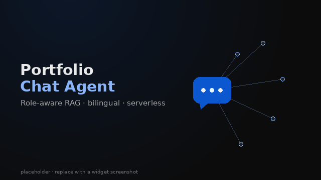

Third-person platformer in a living building - grapple traversal, combat systems, and Hive level design.一款以“活体建筑”为舞台的第三人称平台动作游戏：钩爪穿行、战斗系统，以及 Hive 关卡设计。
Nothing Can Go Wrong | Game Designer & ProgrammerNothing Can Go Wrong | 游戏设计师／程序员
A design exploration in indirect control and consequence-driven planning.一次围绕“间接操控”与“谋定而后动”的玩法设计探索。
Code Breaker | Game DeveloperCode Breaker | 游戏开发者
Gyrotris | Solo Game DeveloperGyrotris | 独立游戏开发者
Other Related Works其他相关作品
AI Tarot Projection - LLM-Guided Reflection | Solo DeveloperAI 塔罗投射 - 大模型引导的反思应用 | 独立开发者
For people who don’t believe in tarot but do believe in thinking out loud: a browser-based reflection app that uses your own API key, with two interchangeable relays governed by one tested contract.写给不信塔罗、却相信把话说出来会有帮助的人：应用在浏览器中运行，使用你自己的 API 密钥；两个可互换的中继遵循同一份契约，并由同一套测试验证。
A retrieval-augmented assistant built into this site that answers questions about YC, with a name-blind, cross-language relevance gate and bilingual responses.内嵌于本站的检索增强（RAG）助手，专门回答与 YC 有关的问题；它配有不受姓名干扰的跨语言相关性门控，并支持中英双语回答。

Prime Engine - Engine Systems Implementation | Engine ProgrammerPrime Engine - 引擎系统实现 | 引擎程序员
Implemented view frustum culling, physics collision + sliding response, and debug visualization for bounding volumes in a minimal C++ engine.为一个精简的 C++ 引擎实现了视锥剔除、物理碰撞与滑动响应，以及包围体的调试可视化。
Physical Game Prototypes | Designer & Producer实体游戏原型 | 设计师／制作人
Match pairs of project images by turning over two cards at a time. If the cards do not load correctly, clear the site’s cached data and refresh the page.每次翻开两张卡片，找出成对的项目图片。如果卡片没有正常加载，请清除本站的缓存数据后刷新页面。